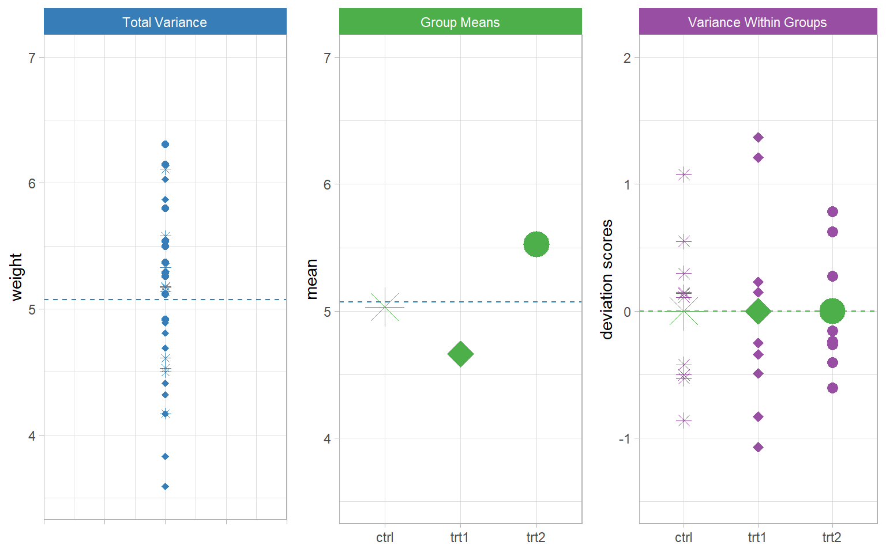
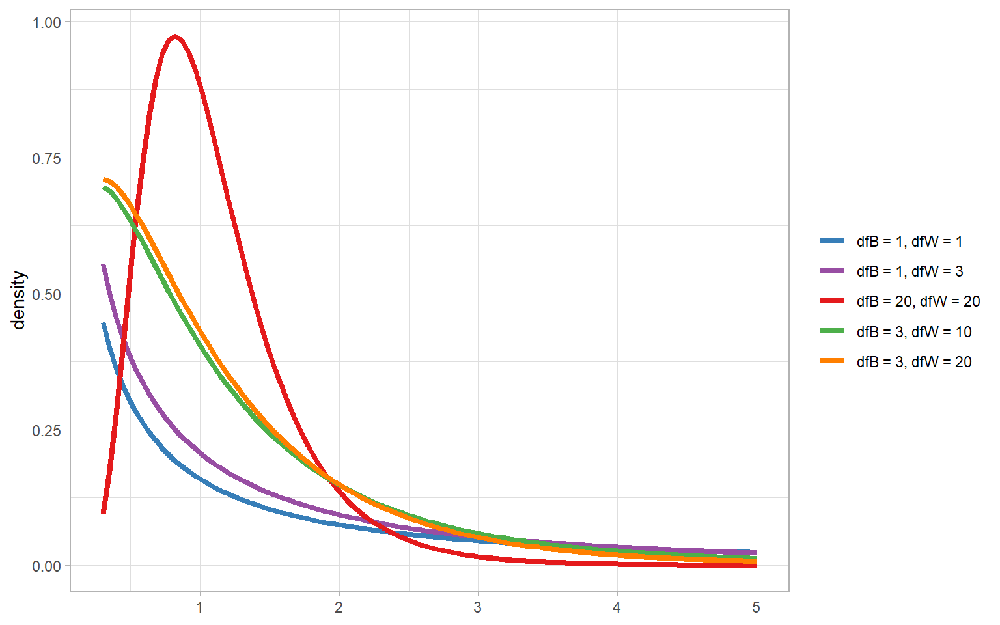
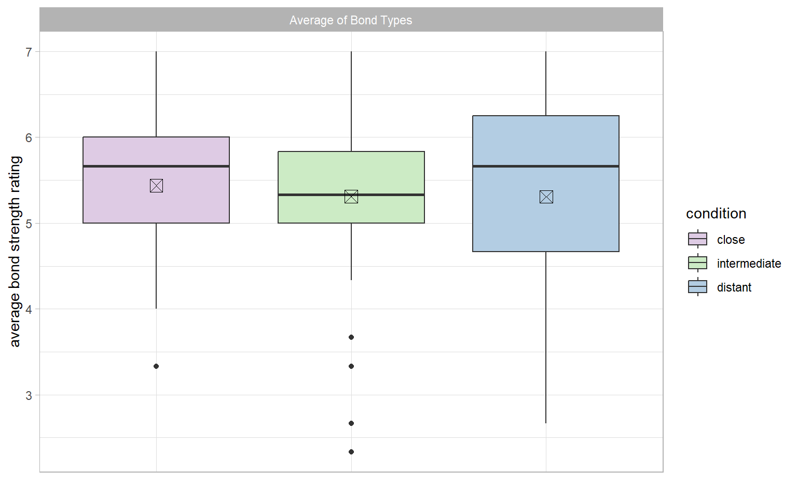

Lecture 16: One Way ANOVA
Frequentist and Bayesian
Today will give us a picture for how the rest of the course will go
- We will learn about one way ANOVA as a method for comparing the means of multiple groups
- Review the “traditional” frequentist perspective
- Contrast this with the Bayesian approach
- Emphasize the model based perspective
Analysis of Variance
Analysis of variance (ANOVA) is one of the most popular statistical tests.
Today, we’ll learn about the simplest case of ANOVA (one-way ANOVA):
- Groups are defined between (not within) subjects
- Separate individuals in separate groups
- One independent variable with 3+ independent groups
- Can be considered generalization of independent sample \(t\)-test to more than two groups
Although it’s called the analysis of variance, we use ANOVA to test hypotheses about means. For our frequentist setup:
\[H_0: \mu_1 = \mu_2 = \mu_3 = \cdots\]
\[H_1: \text{at least one of the means are different}\]
Example Data
Example: weight of plants under one of three conditions
- Control (ctrl), 10 observations
- Treatment 1 (trt1), 10 observations
- Treatment 2 (trt2), 10 observations
Group Means

Are these means equal in the population?
The Traditional Model
Suppose subject \(i\) belongs to group \(g\). The observed response is \(y_{ig}\).
The structural model decomposes observations into different sources of variability (hence Analysis of Variance):
\[\begin{align*} y_{ig} &= \color{#377EB8}{\mu} + \color{#4DAF4A}{(\mu_g - \mu)} + \color{#984EA3}{(y_{ig} - \mu_g)} \\ y_{ig} &= \color{#377EB8}{\mu} + \color{#4DAF4A}{\tau_g} + \color{#984EA3}{\epsilon_{ig}} \end{align*}\]
- \(\mu\): grand mean, population mean disregarding group membership
- \(\mu_g\): population group mean for group \(g\)
- \(\tau_{g}\): deviation of group \(g\)’s mean from the grand mean
- \(\epsilon_{ig}\): deviation of individual \(i\) from group \(g\)’s mean
Map to General Linear Model
\[\begin{align*} y_{ig} &= \color{#377EB8}{\beta_0} + \color{#4DAF4A}{\beta_1 x_{1i} + \beta_2 x_{2i}} + \color{#984EA3}{\epsilon_i} \end{align*}\]
Where \(x_1\) and \(x_2\) are defined as follows:
| \(g_1\) | \(g_2\) | \(g_3\) | |
|---|---|---|---|
| \(x_1\) | 1 | 0 | -1 |
| \(x_2\) | 0 | 1 | -1 |
And
- \(\beta_0: = \mu\)
- \(\beta_1: = \mu_{1} - \mu\)
- \(\beta_2: = \mu_{2} - \mu\)
What about \(\mu_{3}\)?
Let’s say \(\mu = 2\), \(\mu_{1} = 1\), and \(\mu_{2} = 3\) (equal sample sizes in each group). What is \(\mu_3?\)
\(\mu_{3} = \mu - (\mu_{1} - \mu) - (\mu_{2} - \mu) =\) \(2 - (1 - 2) - (2 - 2) = 3\)
\(\mu_{3} = \mu - (\mu_{1} - \mu) - (\mu_{2} - \mu) =\) \(\beta_0 - \beta_1 - \beta_2\)
Coding \(g - 1\) \(x\)’s give us all the info about \(g\) group means
Coding Options
Effects or contrast coding compares \(g-1\) groups to \(\beta_0 =\) grand mean:
| Predictor | \(g_1\) | \(g_2\) | \(\cdots\) | \(g_{G-1}\) | \(g_G\) |
|---|---|---|---|---|---|
| \(x_1\) | 1 | 0 | \(\cdots\) | 0 | -1 |
| \(x_2\) | 0 | 1 | \(\cdots\) | 0 | -1 |
| \(\vdots\) | \(\vdots\) | \(\vdots\) | \(\ddots\) | \(\vdots\) | \(\vdots\) |
| \(x_{G-1}\) | 0 | 0 | \(\cdots\) | 1 | -1 |
Dummy coding compares \(g-1\) groups to \(\beta_0 =\) reference group mean:
| Predictor | \(g_1\) | \(g_2\) | \(\cdots\) | \(g_{G-1}\) | \(g_G\) |
|---|---|---|---|---|---|
| \(x_1\) | 1 | 0 | \(\cdots\) | 0 | 0 |
| \(x_2\) | 0 | 1 | \(\cdots\) | 0 | 0 |
| \(\vdots\) | \(\vdots\) | \(\vdots\) | \(\ddots\) | \(\vdots\) | \(\vdots\) |
| \(x_{G-1}\) | 0 | 0 | \(\cdots\) | 1 | 0 |
Coding scheme of choice only matters for interpreting coefficients (\(\beta\)’s)
Coding Scheme Comparison
\[\begin{align*} y_{ig} &= \color{#377EB8}{\beta_0} + \color{#4DAF4A}{\beta_1 x_{1i} + \beta_2 x_{2i}} + \color{#984EA3}{\epsilon_i} \end{align*}\]
Contrast/Effects coding:
- \(\beta_0: = \mu\)
- \(\beta_1: = \mu_{1} - \mu\)
- \(\beta_2: = \mu_{2} - \mu\)
Compares groups to grand mean
Dummy coding:
- \(\beta_0: = \mu_3\)
- \(\beta_1: = \mu_{1} - \mu_3\)
- \(\beta_2: = \mu_{2} - \mu_3\)
Compares groups to reference group mean (in this case group three)
Decomposition
Sticking with the traditional model structure:
\[y_{ig} = \color{#377EB8}{\mu} + \color{#4DAF4A}{\tau_g} + \color{#984EA3}{\epsilon_{ig}}\]
From this equation, scores are affected by three effects:
- Overall mean effect
- Between Group (treatment) effect
- Within Group effects (individual differences)
In ANOVA, we consider the magnitude of these effects by decomposing the total variance into Between and Within group effects.
Decomposition Visual

Variance of Means
In the one-way ANOVA, the null hypothesis for \(G\) groups is
\[H_0: \mu_1 = \mu_2 = \cdots = \mu_G\]
An equivalent way to express this is:
\[H_0: \mu_1 - \mu_2 = \mu_1 - \mu_3 = \cdots = \mu_{-1} - \mu_G = 0\]
Or, more succinctly
\[H_0: \frac{\sum_{g=1}^G (\mu_g - \mu)^2}{G-1} = 0\]
In English:
- If population group means are equal, then the population variance of group means equals 0
- The problem (the one we always have): even if \(H_0\) is true, not all sample group means will be equal due to random sampling variation
Sums of Squares I
We want to separate the variability in data into:
- Variability between different group means
- Variability within groups
Step 1: Sums of Squares (SS)
- Sound familiar? Think: numerator of the variance
\[s^2 = \frac{\sum(x - \bar{x})^2}{N-1}\]
\[SS = \sum(x - \bar{x})^2\]
Sums of Squares II
We want to separate the variability in data into:
- Variability between different group means
- Variability within groups
Step 1: Sums of Squares
- In ANOVA we decompose the Sums of Squares into three components:
- Sum of squares total (\(SST\))
- Sum of squares between groups/treatments (\(SSB\))
- Sum of squares within groups (error, residuals) (\(SSW\))
Sums of Squares III
Individual scores \(y_{ig}\):
- \(i\): individual indicator
- \(g\): group indicator
- \(n_g\): number of observations in group \(g\)
- \(\bar{y}\): sample grand mean (of all scores)
Sample variation of \(y = \sum_g\sum_i(y_{ig} - \bar{y})^2\)
\[\begin{align*} \underbrace{\sum_g\sum_i(y_{ig} - \bar{y})^2}_{\color{#377EB8}{SST}} &= \underbrace{\sum_gn_g(\bar{y}_g - \bar{y})^2}_{\color{#4DAF4A}{SSB}} + \underbrace{\sum_g\sum_i(y_{ig} - \bar{y}_g)^2}_{\color{#984EA3}{SSW}} \end{align*}\]
- \(SST\): total variation of participants scores (total effect)
- \(SSB\): total variation between groups (between-group effect)
- \(SSW\): variation within groups (within-group effect)
Sums of Squares IV
Plant Data: Overall \(\bar{y} = 5.073\)
| Control | Treatment 1 | Treatment 2 | |||
|---|---|---|---|---|---|
| 4.17 | 4.61 | 4.81 | 3.83 | 6.31 | 5.29 |
| 5.58 | 5.17 | 4.17 | 6.03 | 5.12 | 4.92 |
| 5.18 | 4.53 | 4.41 | 4.89 | 5.54 | 6.15 |
| 6.11 | 5.33 | 3.59 | 4.32 | 5.50 | 5.80 |
| 4.50 | 5.14 | 5.87 | 4.69 | 5.37 | 5.26 |
| \(\bar{y}_1 = 5.03\) | \(\bar{y}_2 = 4.66\) | \(\bar{y}_3 = 5.53\) |
\[SST = (4.17 - 5.073)^2 + (5.58 - 5.073)^2 + \cdots + (5.26 - 5.073)^2 = \mathbf{14.26}\]
\[SSB = 10(5.03 - 5.073)^2 + 10(4.66 - 5.073)^2 + 10(5.53 - 5.073)^2 = \mathbf{3.77}\]
\[SSW = (4.17 - 5.03)^2 + \cdots + (4.81 - 4.66)^2 + \cdots + (5.26 - 5.53)^2 = \mathbf{10.49}\]
\[SSW = SST - SSB = 14.26 - 3.77 = \mathbf{10.49}\]
Mean Squares I
Step 2: Find degrees of freedom and calculate mean squares
| Component | Sum of Squares | Degrees of Freedom | Mean Squares |
|---|---|---|---|
| Between-group effect | \(\sum_{g}n_g(\bar{y}_{g}-\bar{y})^{2}\) | \(dfB = G - 1\) | \(MSB = \frac{SSB}{dfB}\) |
| Within-group effect | \(\sum_{g}\sum_{i}(y_{ig}-\bar{y}_{g})^{2}\) | \(dfW = N - G\) | \(MSW = \frac{SSW}{dfW}\) |
| Total effect | \(\sum_{g}\sum_{i}(y_{ig}-\bar{y})^{2}\) | \(dfT = N - 1\) | \(MST = \frac{SST}{dfT} = s^2_y\) |
\[SST = SSB + SSW \qquad dfT = dfB + dfW\]
- \(G\): number of groups
- \(N\): total sample size
Mean Squares II
Mean square \(= SS / df\)
Interpretation: Mean squares can be interpreted like variances
- \(MST\): overall variance of \(y\) across participants and groups
- \(MSB\): variance of the between-group effect
- \(MSW\): variance of the within-group effect (residual/error variance)
Across repeated sampling:
\[\text{mean}(MSB) = N\theta^2_B + \sigma^2_W\] \[\text{mean}(MSW) = \sigma^2_W\]
- \(\theta^2_B\): population variance of between-group effect
- \(\sigma^2_W\): population variance of within-group effect
If \(H_0\) is true:
\[\theta^2_B = 0\]
If \(H_1\) is true:
\[\theta^2_B > 0\]
So what comparison does this imply for our test in terms of our sample statistics?
Mean Squares III
Across repeated sampling:
\[\text{mean}(MSB) = N\theta^2_B + \sigma^2_W\] \[\text{mean}(MSW) = \sigma^2_W\]
- \(\theta^2_B\): population variance of between-group effect
- \(\sigma^2_W\): population variance of within-group effect
If \(H_0\) is true:
\[\text{mean}(MSB) = N(0) + \sigma^2_W\] \[\text{mean}(MSW) = \sigma^2_W\]
\[\frac{\text{mean}(MSB)}{\text{mean}(MSW)} = 1\]
If \(H_1\) is true:
\[\text{mean}(MSB) = N(\theta^2_B) + \sigma^2_W\] \[\text{mean}(MSW) = \sigma^2_W\]
\[\frac{\text{mean}(MSB)}{\text{mean}(MSW)} > 1\]
ANOVA Table
| SS | df | MS | |
|---|---|---|---|
| Between Groups | 3.77 | 2 | 1.88 |
| Within Groups | 10.49 | 27 | 0.39 |
| Total | 14.26 | 29 |
\(F\) Distribution
The \(F\) distribution includes two parameters:
- Numerator \(df\) (\(dfB\))
- Denominator \(df\) (\(dfW\))
Properties of the \(F\) distribution:
- \(F\) is defined on the interval \([0, \infty]\)
- The \(t\) distribution is equivalent to a special case of the \(F\) distribution
- If \(dfB = 1\), \(F(1, dfW) = t(dfW)^2\)
\(F\) Distribution Visual

Hypothesis Testing
- \(H_0: \mu_1 = \mu_2 = \cdots = \mu_G\)
- \(H_1\): at least one population mean is different
Test statistic: \(F\)-statistic
\[F(dfB, dfW) = \frac{MSB}{MSW}\]
- \(dfB = G - 1 \qquad (G = \text{number of groups})\)
- \(dfW = N - G \qquad (N = \text{total sample size})\)
When \(H_0\) is true, \(F\) test statistic follows the \(F\) distribution with \(dfB\) numerator and \(dfW\) denominator degrees of freedom.
These calculations work for any number of groups and any group sizes.
ANOVA Table and Test
| SS | df | MS | F | p | |
|---|---|---|---|---|---|
| Between Groups | 3.77 | 2 | 1.88 | 4.85 | .02 |
| Within Groups | 10.49 | 27 | 0.39 | ||
| Total | 14.26 | 29 |
Interpretation: Were the null hypothesis true, there is only a 2% chance we would have observed variance between group means at least this large.
Effect Size
Effect Sizes
\(d\)-family: standardized difference between groups - Cohen’s \(d\): standardized mean differences between pairs of groups - Will come back to this more next time
\(r\)-family: standardized association between two variables - \(\eta^2\) aka \(R^2\): proportion of variance of outcome accounted for by predictor (group membership) - \(\omega^2\): adjusted \(\eta^2\) - \(f^2\): used for statistical power analysis
\(\eta^2\) Effect Size
\[\eta^2 = \frac{SSB}{SST} = \frac{SSB}{SSB + SSW} = R^2 = 1 - \frac{s^2_{\epsilon}}{s^2_y} = \frac{s_{\hat{y}}^2}{s_y^2}\]
Interpretation:
- Proportion of variation of outcome accounted for by group differences
- Usually \(\eta^2\) in ANOVA and \(R^2\) in regression (more later)
- Is a positively biased statistic to the population parameter
- Positive bias: on average, statistic is larger than the parameter
- We are more likely to think our effect is too large than too small due to sample variation
- Sometimes called “overfit”
\(f^2\) Effect Size
\(r\)-family effect size measure, mostly used for conducting power analyses.
\[f^2 = \frac{\eta^2}{1 - \eta^2} = \frac{SSB}{SSW}\]
Interpretation: Ratio of between-group variability to within-group variability.
Cohen’s (1988, 1992) suggestions:
- \(f = 0.10, f^2 = 0.0100, \eta^2 = 0.010\): small effect
- \(f = 0.25, f^2 = 0.0625, \eta^2 = 0.059\): medium effect
- \(f = 0.40, f^2 = 0.1600, \eta^2 = 0.138\): large effect
In practice, you may want to report effect size in terms of \(\eta^2\) instead of \(f^2\) because it is easier to interpret.
\(\omega^2\) Effect Size
\(\omega^2\) is less biased than \(\eta^2\):
\[\omega^2 = \frac{SSB - (G - 1)\times MSW}{SST + MSW}\]
- \(G\): number of groups
- Similar (but not identical to) to adjusted \(R^2\) in regression (more later)
- \(\omega^2\) is not completely unbiased)
Interpretation: Same interpretation as \(\eta^2\) (proportion of variation accounted for by group differences).
The Story So Far
- This is known as the “omnibus” test
- Is there any difference in group means anywhere among all groups?
- Says nothing about which specific groups differ
- Will get to that next time!
- This is a bit awkward from a Bayesian perspective
- Some would argue all we really want to do in Bayes is obtain probability distributions about what the means of each group are likely to be
- Can then directly compare groups to one another
- Closest corollary is Bayes factor
- How much more/less likely is it that the means differ than they do not?
- Some would argue all we really want to do in Bayes is obtain probability distributions about what the means of each group are likely to be
Bayes Factor Refresher
Bayes Factors are a way of comparing the support for different models in a Bayesian framework.
They are ratios of posterior likelihoods between competing models. If we have two possible models for the same data, \(M_1\) and \(M_2\).
\[BF = \frac{P(\boldsymbol{D}|M_1)}{P(\boldsymbol{D}|M_2)}\]
- When \(BF = 1\) the two models are equally likely
- When \(BF > 1\) then \(M_1\) is more likely than \(M_2\)
- When \(BF = 3\), \(M_1\) is three times as likely to be the “true” model as \(M_2\)
- When \(BF < 1\), \(M_2\) is more likely than \(M_1\)
- When \(BF = \frac{1}{3}\), \(M_2\) is three times as likely to be the “true” model as \(M_1\)
Bayes Factor Setup
Traditional ANOVA Model Setup
- \(\boldsymbol{M_2}: y_{ig} = \color{#377EB8}{\mu} + \color{#984EA3}{\epsilon_{ig}}\)
- \(\boldsymbol{M_1}: y_{ig} = \color{#377EB8}{\mu} + \color{#4DAF4A}{\tau_g} + \color{#984EA3}{\epsilon_{ig}}\)
General Linear Model Setup
- \(\boldsymbol{M_2}: y_{ig} = \color{#377EB8}{\beta_0} + \color{#984EA3}{\epsilon_{ig}}\)
- \(\boldsymbol{M_1}: y_{ig} = \color{#377EB8}{\beta_0} + \color{#4DAF4A}{\sum_{p=1}^{g-1}\beta_p x_{p}} + \color{#984EA3}{\epsilon_i}\)
Where \(x_p\) and are \(g-1\) coded categorical variables representing group membership.
Interpretation: The means being different is \(BF\) times as likely as the means being equal
Jeffreys Lindley Paradox
When using Bayes factors to “test the null hypothesis” that all means are equal
- Using a “weaker” prior, e.g. \(\text{normal}(0, 10)\), for the \(\beta\)’s can be more likely to support the null model \(M_2\)
- Using a “stronger” prior, e.g. \(\text{normal}(0, 1)\), for the \(\beta\)’s can be more likely to support the full model \(M_1\)
Why would a stronger prior that the null hypothesis is likely to be true make it so a Bayes factor would say that a model that represents an alternative hypothesis is more likely than the null?
Jeffreys Lindley Reason
Remember, priors are probability distributions, not point hypotheses
- Stronger prior means there is more support for no difference, but also that very small differences are more likely than very large differences
- Will make posterior likelihood larger if there are only small differences in the sample means
- Weaker prior will give less support to very small differences
- Posterior likelihood less likely to be concentrated in regions reflecting small differences
If unsure, do analysis with a few different priors (sensitivity analysis)
Robert, C. P. (2014). On the Jeffreys-Lindley paradox. Philosophy of Science, 81(2), 216-232. https://doi.org/10.1086/675729
Posterior Predictive
Philosophically Bayesian inference is more about using probability to represent belief.
- The posterior predictive distribution is a probability distribution representing our belief about possible values \(y\) values might take on conditional on given \(x\) values
- E.g., a probability distribution representing plausible values for a random member from a specific group
- If posterior predictive distribution for all groups are very similar, it means we believe differences between groups are small
- If posterior predictive distributions for some groups are very different, it means we believe differences between groups are large
Bayesian \(R^2\)
Because Bayesian estimates aren’t deterministic the way the simple frequentist ANOVA algorithm is, the traditional \(R^2\) is not guaranteed to be \(0 \leq R^2 \leq 1\)
- Means it is possible for the model to explain more than the total variance
- Not a sensible interpretation!
Alternative:
\[\text{Bayesian } R^2 = \frac{s_{\hat{y}}^2}{s_{\hat{y}}^2 + s_{\epsilon}^2}\]
- Is guaranteed to be \(0 \leq \text{Bayesian } R^2 \leq 1\)
- Same interpretation as \(\eta^2\) and \(R^2\)
Another Example

ANOVA in R: Way 1
The default R way to estimate an ANOVA model is with the aov() function using formula syntax.
We can then get the \(F\)-test with the summary() function.
ANOVA in R: Way 2
Between subjects one-way ANOVA in R is easy. Later it gets confusing when we have within subjects designs. The ez package and ezANOVA() function can do both easily, though you have to make sure to specify a subject ID as wid = ID even for between subjects analysis.
What do you think ges might be?
Stands for generalized \(\eta^2\) (same as our \(\eta^2\)) so far, slightly different in some other cases
\(\eta^2\) Example
\[\eta^2 = \frac{SSB}{SSB + SSW} = \frac{0.49}{0.49 + 125.9} = .004\]
\(\omega^2\) Example
\[\omega^2 = \frac{SSB - (G - 1)\times MSW}{SST + MSW} = \frac{0.49 - (2)\times 1.03}{0.49 + 125.9 + 1.03} = -0.01\]
(Yes, \(\omega^2\) can be negative, but we generally just interpret that as \(\omega^2 = 0\), or more precisely, \(\omega^2 < .001\))
Bayesian Version
By default, most R packages use dummy coding. What is the reference group in this output? “Close”, since the coefficients represent “intermediate” and “distant” (differences with “close”)
stan_lm1 <- stan_glm(average_bond ~ condition, dat, family = "gaussian",
diagnostic_file = "df1.csv")
summary(stan_lm1)
Model Info:
function: stan_glm
family: gaussian [identity]
formula: average_bond ~ condition
algorithm: sampling
sample: 4000 (posterior sample size)
priors: see help('prior_summary')
observations: 125
predictors: 3
Estimates:
mean sd 10% 50% 90%
(Intercept) 5.4 0.2 5.2 5.4 5.6
conditionintermediate -0.1 0.2 -0.4 -0.1 0.2
conditiondistant -0.1 0.2 -0.4 -0.1 0.2
sigma 1.0 0.1 0.9 1.0 1.1
Fit Diagnostics:
mean sd 10% 50% 90%
mean_PPD 5.4 0.1 5.2 5.4 5.5
The mean_ppd is the sample average posterior predictive distribution of the outcome variable (for details see help('summary.stanreg')).
MCMC diagnostics
mcse Rhat n_eff
(Intercept) 0.0 1.0 3274
conditionintermediate 0.0 1.0 3033
conditiondistant 0.0 1.0 3299
sigma 0.0 1.0 3959
mean_PPD 0.0 1.0 4342
log-posterior 0.0 1.0 1681
For each parameter, mcse is Monte Carlo standard error, n_eff is a crude measure of effective sample size, and Rhat is the potential scale reduction factor on split chains (at convergence Rhat=1).Posterior Predictive Example
For one way ANOVA, we can use the emmeans::emmeans() function to get posterior predictive distributions with 95% HPD credible intervals
Bayesian \(R^2\)
Bayes Factors
Jeffreys Lindley Paradox
Let’s see what happens if I use a stronger prior that the \(\beta\)’s are 0 (more likely that there are no group differences)
Bayes factor now says the full model is about as likely than the null model!